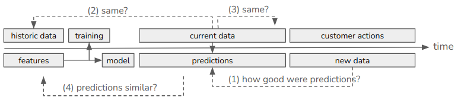
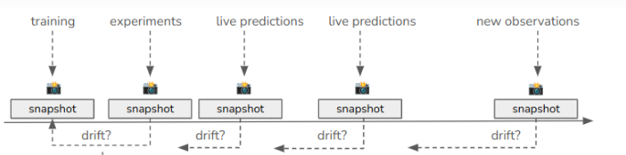
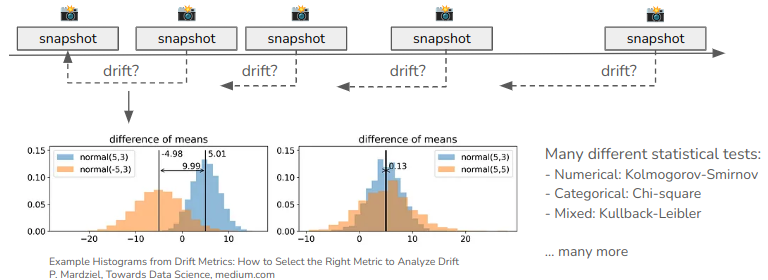

Monitoring model and data drift¶
What is drift monitoring?¶
To understand drift monitoring, consider a model that is trained on past customer data and deployed to production, as shown in the following diagram.
Let’s say the model is used for marketing campaign planning, that is to predict which customers are likely to buy a product. The model is trained on a dataset representing historic (known) data. Current data (not seen before, also called unknown or new data) is fed to the model to make predictions, that is to determine whether a given customer should be included in the campaign. At the time of prediction it is unknown whether the customer will actually buy the product or not, so we don’t know the true outcome yet.
Based on this process we can ask the following questions:
How well does the model perform in actually predicting customer behavior?
Is the current (new) data similar to the data the model was trained on?
How is the current (new) data changing over time?
Are the model’s predictions changing over time?
While the first question is answered by model evaluation, the remaining questions are answered by drift monitoring.
Drift monitoring is the process of detecting changes in the distribution of a model’s input features and targets over time. omega-ml implements drift monitoring by taking statistical snapshots of input and target features at regular intervals and comparing each snapshot to a baseline snapshot.
There are two types of drift:
Data Drift: Changes in the distribution of input features. We’re interested in P(X) changing over time. This is also called feature drift.
Model Drift: Changes in the distribution of target features. We’re interested in P(Y|X) changing over time. This is also called concept drift.
Note that Model Drift is a special case of Data Drift, where the target feature (and possibly metrics) are monitored in addition to the input features.
How does it work?¶
omega-ml implements both data and concept drift using the concept of a Monitor. A Monitor takes snapshots of data and compares them to a baseline snapshot. The Monitor can be used interactively, in code, or run automatically on a schedule. There are two types of Monitors:
DataDriftMonitor - to monitor changes in the distribution of features (variables) in any dataset
ModelDriftMonitor - to monitor changes in the distribution of input features, target features and metrics of a model.
The DataDriftMonitor provides the core functionality of drift monitoring, namely:
Taking snapshots of data
Comparing snapshots to determine drift
Plotting and describing results
The ModelDriftMonitor extends the DataDriftMonitor to include monitoring of models. It provides the following additional functionality:
Taking snapshots of input features, target features and metrics of a model
Comparing snapshots to determine drift in input features, target features and metrics
Capturing alerts when drift is detected
The ModelDriftMonitor is particularly useful in production scenarios where models are deployed and serving predictions. It can be attached to a model and scheduled to run at regular intervals to monitor the model’s performance and the data it is receiving. If drift is detected, the Monitor can raise an alert.
What is a snapshot?¶
A snapshot is a statistical summary of a dataset at a given point in time. It captures the distribution of features (variables) in the dataset. A snapshot is used to compare the distribution of features in the dataset at different points in time. Technically, a snapshot is a Python dict, however we can think of it as a statistical summary of the dataset that contains the following information:
Statistics of each feature (mean, std, min, max, percentiles, histogram)
Metadata of the dataset (name, length, kind, columns and types)
Snapshot information (datetime)
Two or more snapshots are used to compare the distribution of features in a dataset at different points in time. The comparison is done using statistical tests and visualizations.
How is drift identified?¶
Drift is identified by comparing snapshots of data to a baseline snapshot. The comparison is done using statistical tests and visualizations. The tests and visualizations are used to determine if the distribution of features in the dataset has changed significantly between any two snapshots. If the distribution has changed significantly, this is considered a drift. A standardized drift score is calculated to quantify the amount of drift.
The following metrics are calculated for each feature in the dataset:
Kolmogorov-Smirnov (KS) statistic: A measure of the difference between two distributions (numerical features)
Wasserstein distance: A measure of the distance between two distributions (numerical features)
Chi-squared statistic: A measure of the difference between two distributions (categorical features)
The following visualizations are used to visualize any two snapshots:
Histograms - distribution numerical features in the dataset
Bar plots - distribution of categorical features in the dataset
Line plots - drift metrics over time